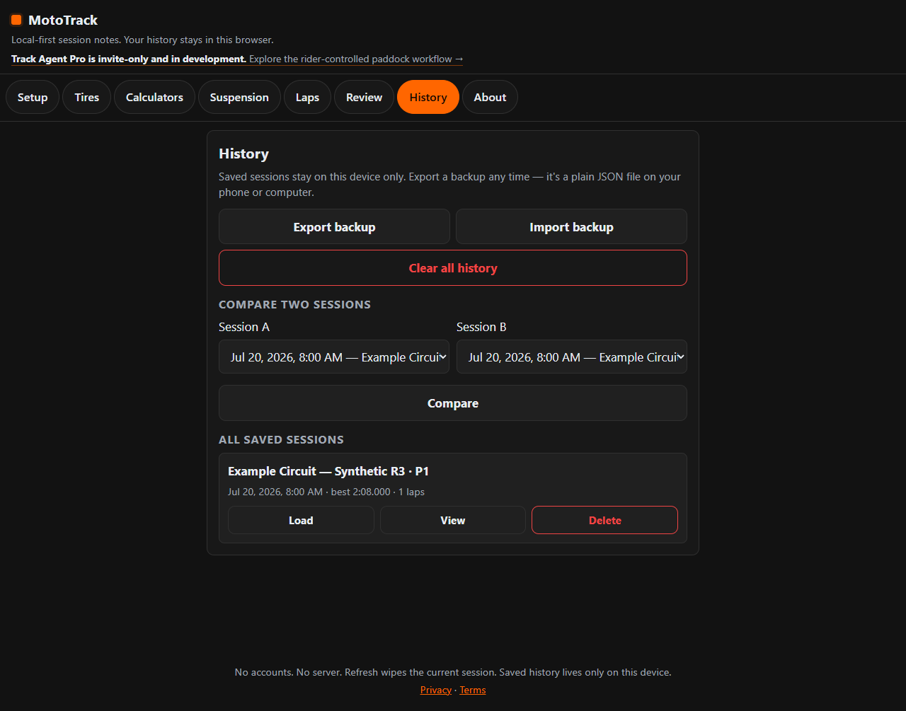

MotoTrack Log
Available nowYour fast, local-first paddock notebook.
Save sessions in your browser, compare notes, and export your history. No account required and no cloud dependency.

- Tire pressures and suspension settings
- Lap times and session notes
- Local history and session comparison
- Backup and restore